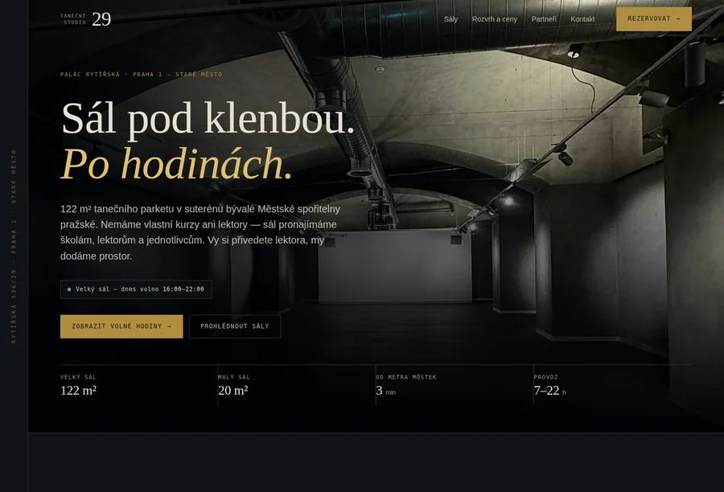

Každá varianta je samostatná úvodní stránka se stejným obsahem
a stejnými čísly — liší se paletou, typografií i kompozicí. Varianta A je
dotažená do celého webu včetně rezervačního systému. Kterákoli z ostatních
se dá dotáhnout stejně.
◆Data v návrzích jsou živá. Volné hodiny, ceny i vyhledávání
termínu počítá ve všech pěti variantách stejný rozvrhový modul.

A
Doporučuji · dotažena celá
Trezor
Dům byl spořitelna, tak si stránka bere její jazyk: rytá číslice,
účetní linky, mosazné šrafování přes obsazené hodiny. Tmavá paleta odpovídá tomu, jak sál skutečně vypadá.
Antonín Wiehl, který palác postavil, byl mistrem sgraffita. Světlá
vápenná omítka, proškrabávané pásy místo ornamentu a všechno
důležité zaklenuté do oblouku — stejného, jaký má sál i okna domu.
Nejodvážnější z návrhů: nahoře není žádná fotografie, jen počet
volných hodin a týden, ve kterém leží. Stránka stojí na mřížce,
kterou neschovává. Fotky přijdou později, malé a odbarvené.
Písmo
Archivo Expanded · IBM Plex Sans · JetBrains Mono
Nosný prvek
Počet volných hodin a pruhy dnů místo hlavní fotky
Silné v
rychlosti rozhodnutí — lektor za dvě sekundy ví, co je volné
Vaše referenční ukázky, dotažené do konce: celoplošná fotografie,
plovoucí vyhledávač termínu a serif s pravou kurzivou na akcenty.
Teplá paleta je vzorkovaná z bodových světel v sále, ne ze šablony.
Písmo
Newsreader · Instrument Sans
Nosný prvek
Plovoucí lišta „najít termín“ — funkční dotaz na rozvrh
Editoriální a prostorný — butikový hotel potkává uměleckou akademii.
Jediný tmavý pás nahoře, pak teplé neutrální papíry až dolů. Zlatá
se objevuje jen tam, kam sáhne ruka: na tlačítku, na lince pod
citátem, na termínu, na který najedete myší.
Písmo
Cormorant Garamond · Plus Jakarta Sans
Nosný prvek
Zlatě orámované tlačítko a program týdne, který detail vydá až při najetí
Silné v
eleganci — nejvíc ze všech variant vypadá jako adresa, do které se chodí
Rozvrhový modul, ceník i texty jsou už napsané a nezávislé na
vzhledu — přenesou se do kterékoli varianty. Změna směru znamená
přepsat paletu, písmo a kompozici, ne obsah.
Klidně si vyberte i po částech: hero z jedné varianty, rozvrh
z druhé.
Co ještě chybí
Skutečné fotky sálu po úpravách · pravý e-mail a telefon ·
vložená mapa · rozhodnutí o názvu studia · potvrzení ceníku ·
souhlas partnerských škol s uvedením loga